AN EVOLVING ARCHIVE / 2026-11-02
把想象做成有形之物，
把经验留下来。
原创模型、网页与可复现的制作记录。
先看作品，也能直接找到它的源码、检验与不足。
13 项模型与介绍页 · 0 项已验收3D空间设计 · 2 项空间原型 · 4 项历史实验待重做 · 2 项复用方法
模型与介绍页：模型设计＋介绍模型本身的网页。
3D空间设计：整页可探索的三维空间，而非网页内嵌3D窗口。
CITY PROJECT / IN PROGRESS
洛阳 · 证据之城 进行中
公开待核验
阶段01证据骨架上新增独立C01设计落位层：从全城、区域、街区到院落，在同一页面观察六院与支巷。
进行中：36个B级示意几何、6个位置未知保留null；R01新增C示意设计落位与支巷，非考古实址；工程1:1不消除古水未知。不是完整洛阳城，GPU与真实手机未验。
本入口独立于下方作品归档，不新增完成作品或空间验收计数。
目录索引 模型与介绍页 · 新空间原型 · 历史实验 · 方法
尚未启动。
归档与上线，分开记录。
共 21 项已归档，21 项公开状态已核验。全部条目的公开入口与内容访问均已有核验记录。发布不代表所有交互或工程性能已验证。
查看公开记录与当前验收边界
状态核验截至 2026-11-02T14:28Z。查看状态依据；实际网页应在每次部署后再次核验，未核验前不自动提升状态。
本总览的空间图形是索引符号。GPU 动态、深度闪烁、实体手机与完整读屏未验。各作品的具体限制保留在卡片及原报告中。
显示全部 21 项。
没有找到匹配条目。试试缩短关键词，或清空筛选。
READ THE DIFFERENCE
看空间关系，不把历史混成一种风格
012看仓楼如何面向开放前场；013看围墙、内屋与院心形成内向关系；014看单侧主子阙如何标示边界。三件来自不同年代、地域与媒介证据，是原创转译练习，不是同一种历史建筑的升级或同处一地的复原。
架空仓楼 · 开放前场
东汉（主参考未细分至晚期） · 中原 · 河南新密
陶明器/彩绘依据、三维解释与原创前场分层；非实证复原
核对本件来源与解释 ↗围合宅院 · 通隙与院心
三国 · 孙吴 · 湖北 · 鄂州
国博陶院落启发；原证关系、三维解释与原创布局分层，不是实证复原
核对本件来源与解释 ↗单侧主子阙 · 道路标界
东汉 · 建安十四年（209）主参考 · 四川 · 雅安
高颐西阙启发原创形体；不含东阙、墓室或城门，不是测绘复原
核对本件来源与解释 ↗可迁移的是配置、几何检查和证据分层的方法，不是跨建筑通用生成器。各自只覆盖明确测试的变体；不能把陶明器、彩绘或石阙的尺度与构件制度相互搬用。
模型与介绍页 13
一件模型设计，以及介绍它本身的网页设计
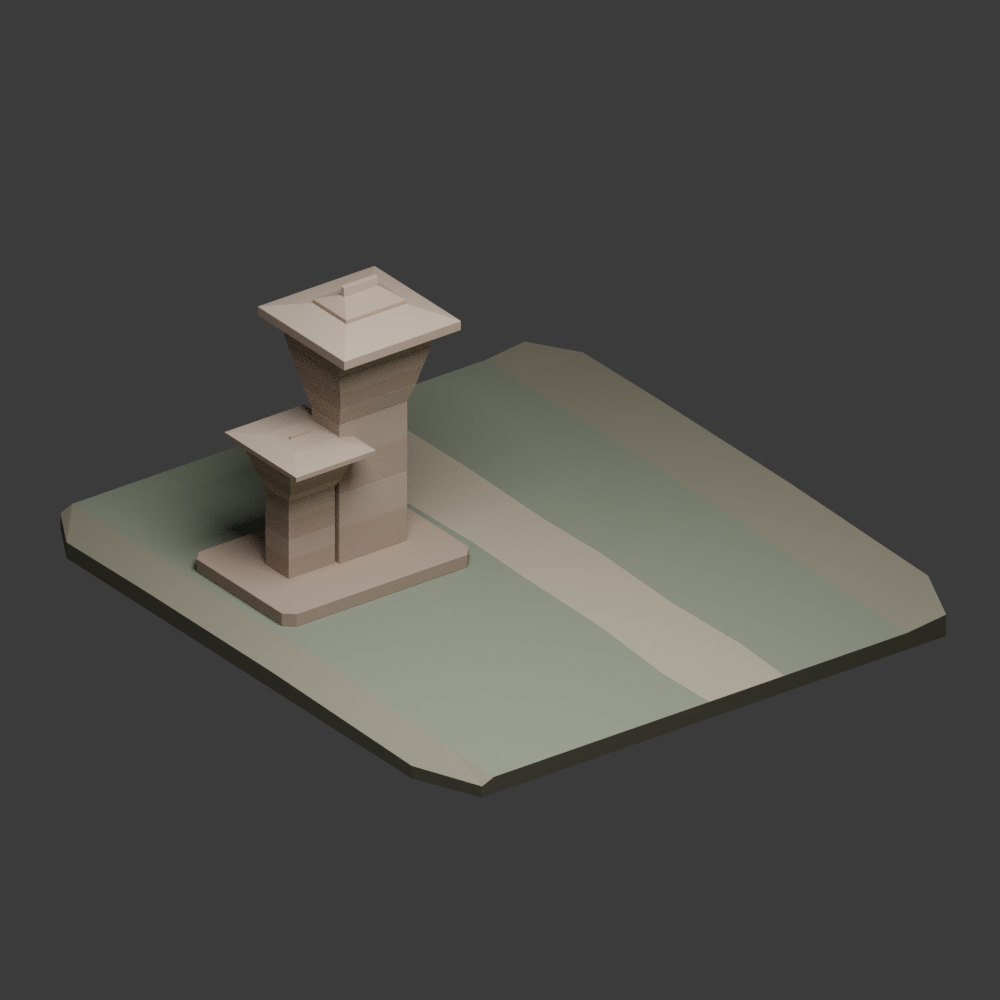
014 / 模型与介绍页
阙影·标界QUE / BOUNDARY
已归档公开已核验低模形体研究／非历史精确复原
主子相依，道路从旁。三案比较主子体比例、阶折基台与道路侧向关系；只研究单侧标界，不拼成城门。
空间类型：单侧主子阙 · 道路标界
参考时期：东汉 · 建安十四年（209）主参考
主参考地域：四川 · 雅安
证据边界：高颐西阙启发原创形体；不含东阙、墓室或城门，不是测绘复原
检查、不足与复用边界
已做检查：三正常配置及四实建极值，共7个有限测试；接触容差对2/1/2另列，模型与导出几何身份分别检查。
仍未验证：低模形体研究非历史精确复原、非全参数证明。A/C形体相近，C主要改变路径；GPU、手机与游戏预算未验。
静态图录与按需模型观察；GPU/真机未验
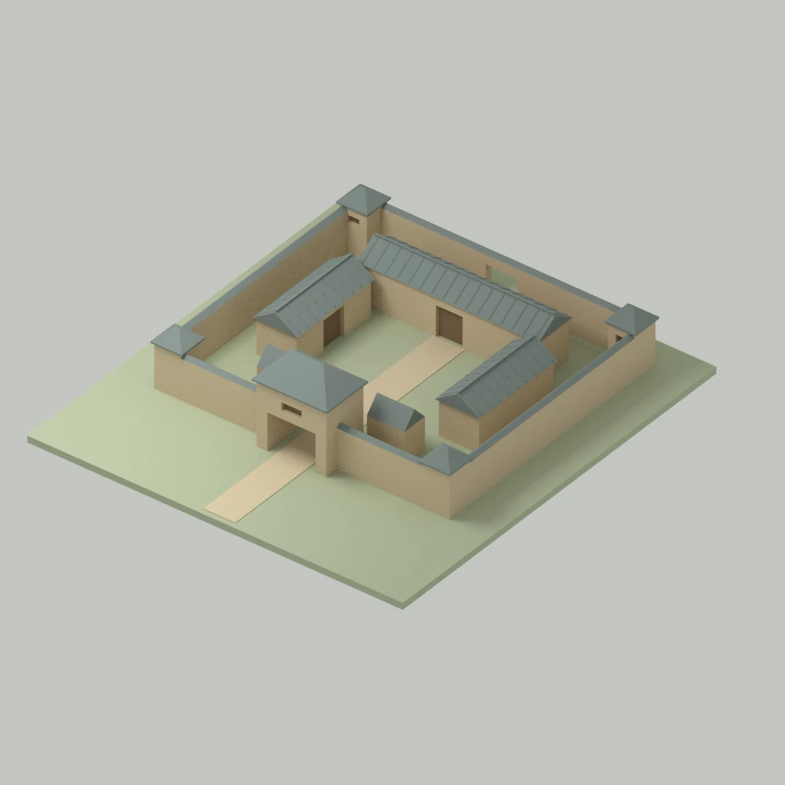
013 / 模型与介绍页
围院·留隙COURTYARD / CLEARANCE
已归档公开已核验模型介绍原型／非历史实证复原
外墙—通隙—内屋—院心；门前、庭内、侧院作业意向三种原创布局。与012开放前场不同，研究内向空间与边界关系。
空间类型：围合宅院 · 通隙与院心
参考时期：三国 · 孙吴
主参考地域：湖北 · 鄂州
证据边界：国博陶院落启发；原证关系、三维解释与原创布局分层，不是实证复原
检查、不足与复用边界
已做检查：v05三款3044/3836/2940三角；19参数与5合成SAT检查、闭合凸构件阈值内检查及导出有向三角匹配。保留渲染与可编辑原件、9视角和静态识别图。
仍未验证：非考古实证复原；限定构件与阈值检查不是任意建筑、连续参数域或结构证明。GPU/真实手机/运动导航/正式游戏性能预算未验。
静态优先；按需模型观察与无GL备用分层，GPU/真机未验
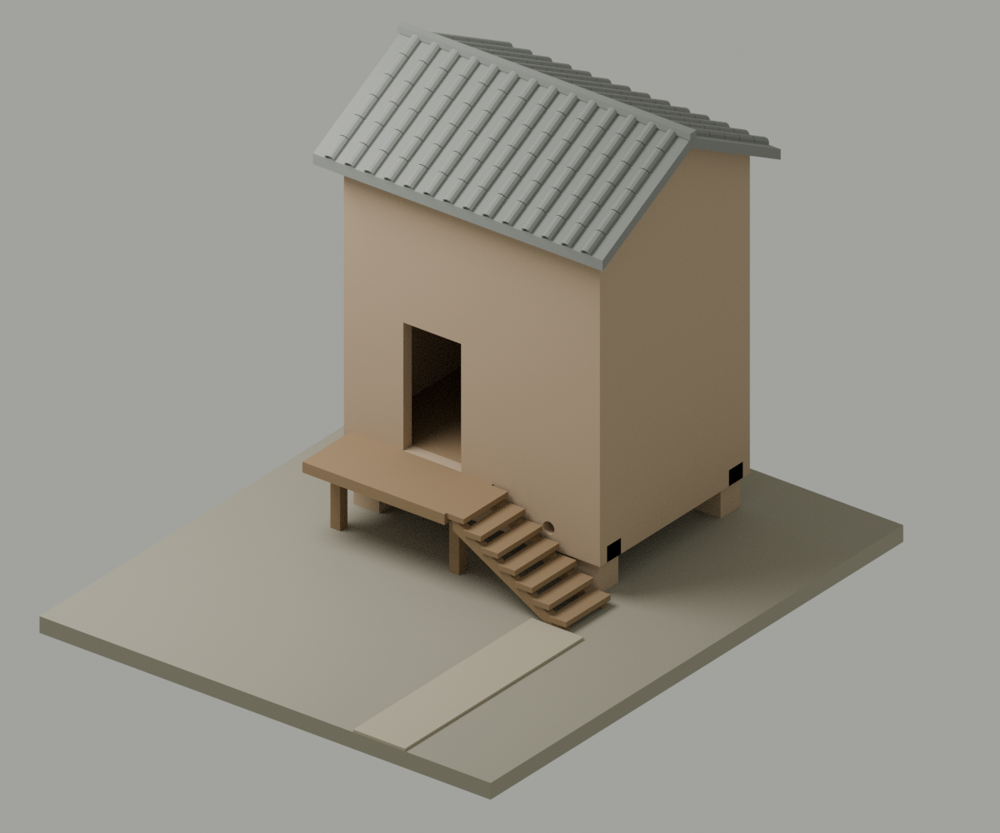
012 / 模型与介绍页
禾仓·前场GRANARY / FORECOURT
已归档公开已核验模型介绍原型／非历史实证复原
以河南新密东汉陶明器为主参考，区分仓体实物依据、彩绘梯廊转译与原创开放前场；三种几何方案改变仓体比例、梯廊和前场关系。
空间类型：架空仓楼 · 开放前场
参考时期：东汉（主参考未细分至晚期）
主参考地域：中原 · 河南新密
证据边界：陶明器/彩绘依据、三维解释与原创前场分层；非实证复原
检查、不足与复用边界
已做检查：3份原生/实际GLB有向三角集合检查、17张冻结图像身份与限定几何/静态尺度检查；页面状态与无GL回退按各报告范围。
仍未验证：GPU、动态闪烁、手机与游戏同屏预算未验；包含型穿插未全域排除；固定三样非连续全集；不是汉末实证复原。
静态图录为主，单件Three观察器按需开启；不是全页3D空间设计。
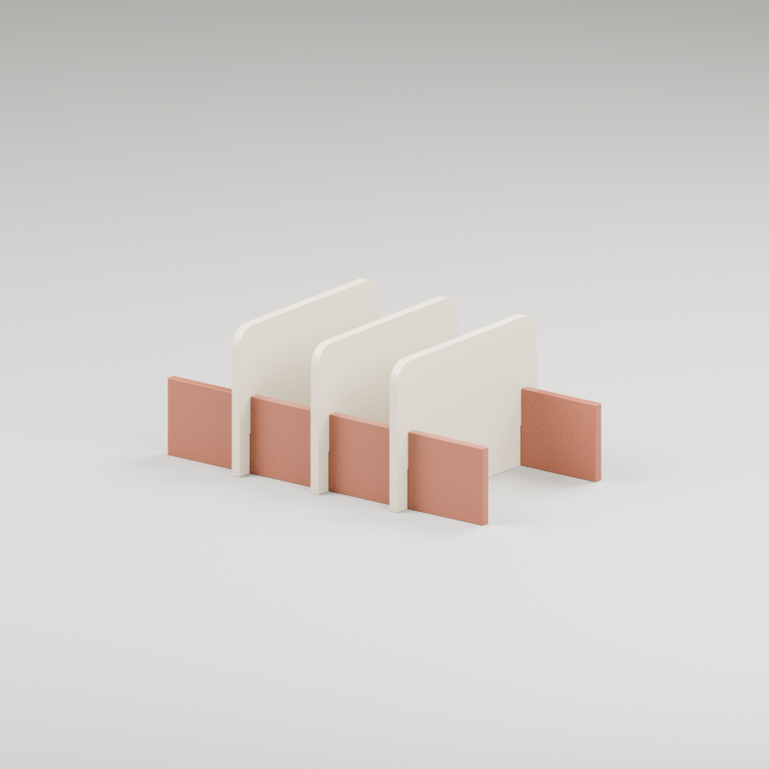
010 / 模型与介绍页
栖格SLOT
已归档公开已核验
用真实互补槽口连接厚板，三个几何变体改变长度、高度与隔板数量。
检查、不足与复用边界
已做检查：三款原生/导出、逐接点、有限运动与场景4门共12报告完成身份绑定；完整146原件不变。
仍未验证：有限样本不是连续轨迹或制造保证；真实GPU、手机、承载、防倾覆未验。
云浏览器键盘/Back/深链/实际资源失败后同会话重试/320与390 CSS宽/noJS已验；非真机。
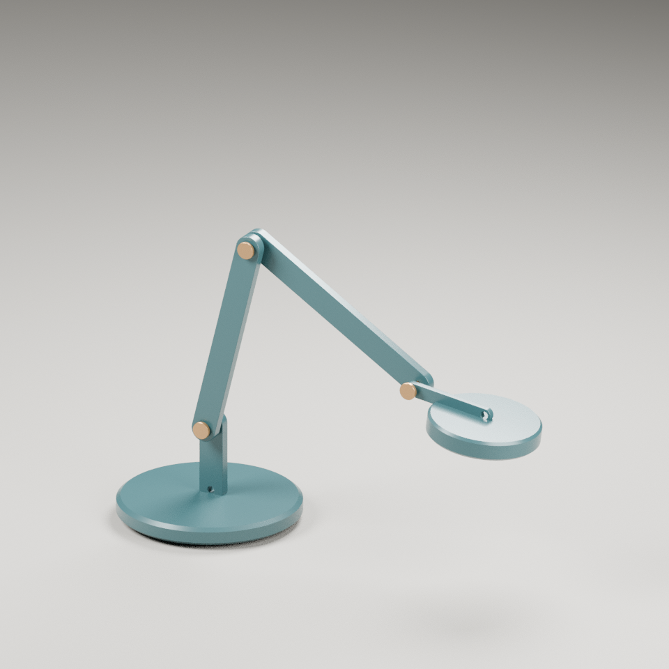
009 / 模型与介绍页
折光HINGE
已归档公开已核验
用三种臂长与尺度组合研究可见转轴、局部装配接触和有限姿态净空。
检查、不足与复用边界
已做检查：九个实际模型、导出一致性及有限运动样本完成绑定检查；31针对性控制含5个有效对照。
仍未验证：有限运动样本不证明连续全域；真实GPU、手机、稳定性、照度和制造性能未验。
网页完成限定验收；磁盘资源恢复后的Retry因预览热重载未完成原生验收
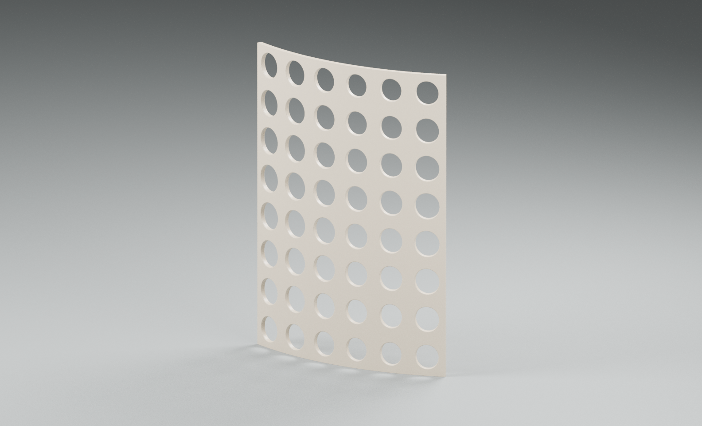
008 / 模型与介绍页
透幕VEIL
已归档公开已核验
同一生成器构造透幕、横幕与曲幕三种几何，以真实厚壳与孔壁研究孔隙、曲率和遮挡。
检查、不足与复用边界
已做检查：三组64点正式几何与导出身份绑定复查；保留孔壁绕序及32点孔缘修订、输入边界和异常反例。
仍未验证：有限采样不证明全部参数域安全；真实GPU、动态闪烁、手机、实体自立、光学及结构性能未验。
独立网页 · 限定原生浏览器验收
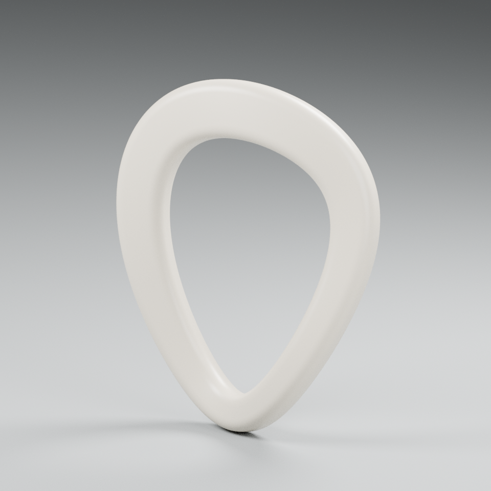
007 / 模型与介绍页
回环ORISON
已归档公开已核验
以连续闭合扫掠研究偏心轮廓、局部变宽与截面滚转；Orison、Latitude、Ascend 呈现不同的负空间比例。
检查、不足与复用边界
已做检查：三正式变体与最终资产身份已复查；保留接缝、冠部修订、反例和逐视图证据，网页将形体与投影观察分开。
仍未验证：有限测试不等于连续参数域证明；GPU、动态闪烁、实体手机与物理自立、烧制及制造性能未验。
独立网页 · 限定原生浏览器验收
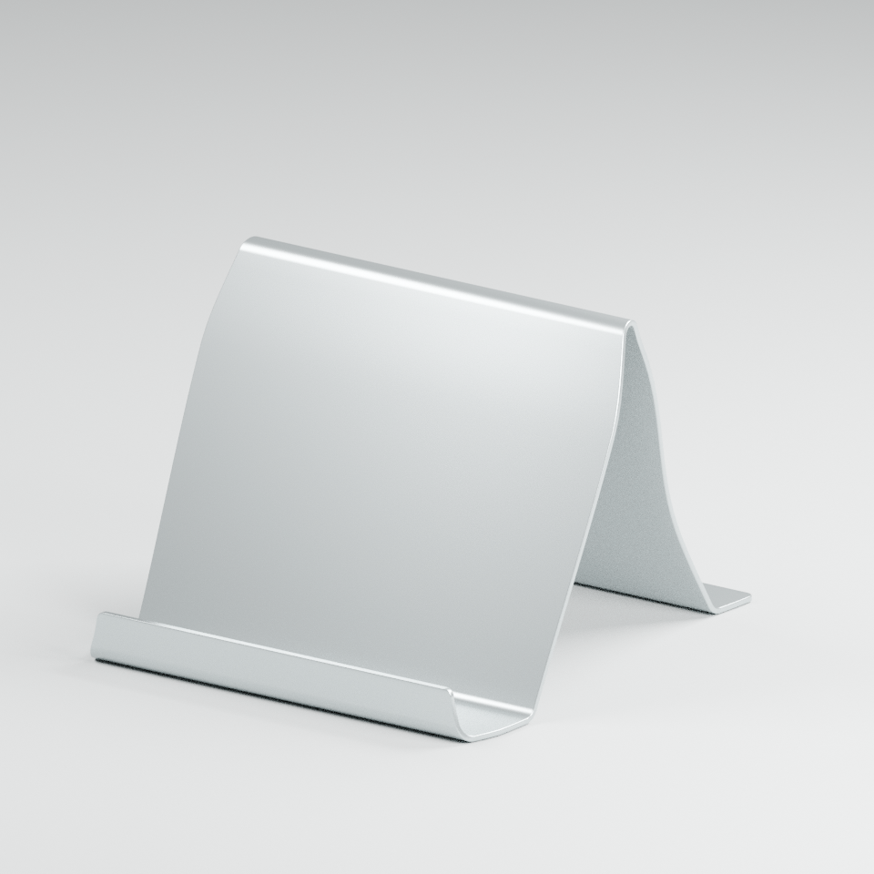
006 / 模型与介绍页
折页FOLIO
已归档公开已核验
用一片连续厚壳组织前唇、斜面、回折与支承。Atlas、Folio、Spire 改变宽高与折角；独立网页解释参数、折面和接地证据。
检查、不足与复用边界
已做检查：三正式模型共21视图、有限门禁与最终资产身份已复核；保留门禁漏检及修复历史，不用单纯报数替代检查。
仍未验证：三变体面数分别10,988 / 12,044 / 13,004；有限测试不证明整个参数域或物理承载、制造、GPU、真机性能。
独立网页 · 静态局部复查通过
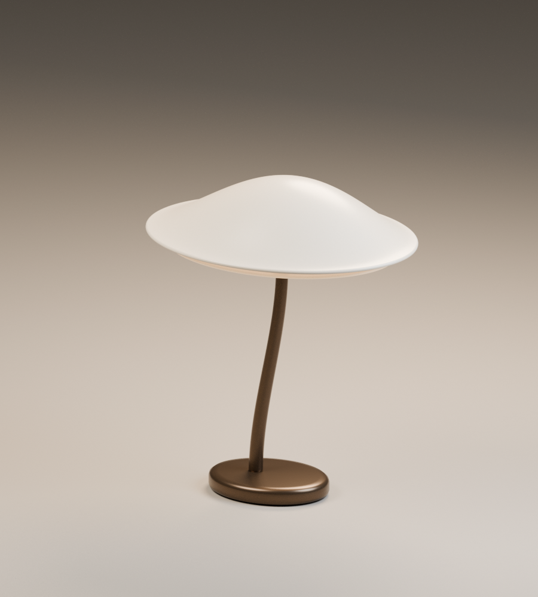
005 / 模型与介绍页
暮灯VESPER
已归档公开已核验
让同一设计语言产生低阔、均衡与修长三种几何，而不是只换颜色。独立产品规格图录比较结构、参数和修订证据。
检查、不足与复用边界
已做检查：三组实际模型、固定摄影棚与门禁检查齐全；保留门禁漏检的修复历史。产品图录与独立观察器已完成所述静态局部验收。
仍未验证：有限配置与测试不证明完整参数域安全；光学、电气、热学、制造、真实GPU与手机仍未验证。
独立网页 v2 · 静态局部复查通过
004 / 模型与介绍页
岬界LIMEN
已归档公开已核验
从孤立器物走向场所。用墙厚、真实拱洞与阶梯，把建筑和岩岸连接为一条抵达路线。
检查、不足与复用边界
已做检查：修正拱洞与穿阶岩体；32,643 条立板射线中的异常由 96 降至 0，昼夜静态切换已检查。
仍未验证：72 组有意装配接触保留；未做建筑规范、结构受力或真实 WebGL 验证。
网页 v2 · 已修订，静态局部复查通过
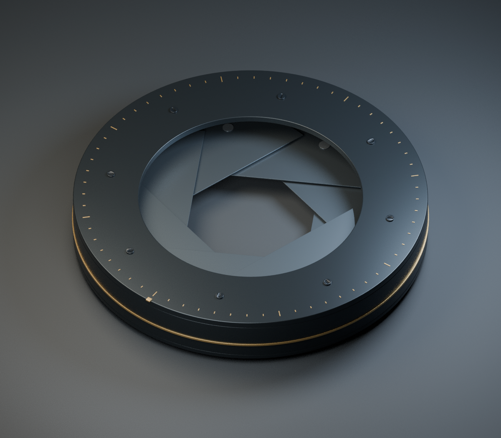
003 / 模型与介绍页
玄瞳UMBRA
已归档公开已核验
从静止器物走向运动关系。八片叶片独立旋转，研究孔口、遮挡、支点与净空。
检查、不足与复用边界
已做检查：57 个采样状态未检出叶片碰撞或投影外围漏孔；独立共面检查发现并修复了 322 对重叠。
仍未验证：117 组静态嵌接保留；没有驱动联动或光学校准，离散检查不是全机构连续运动证明。
网页 v2 · 已修订，静态局部复查通过
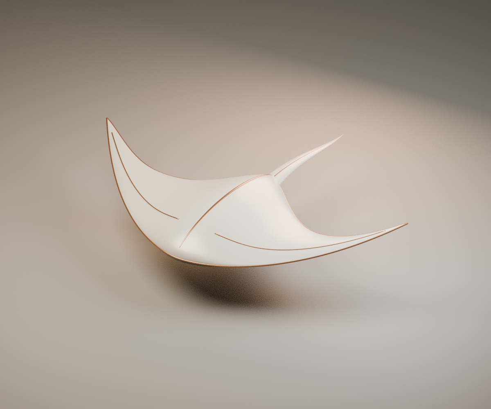
002 / 模型与介绍页
潮翼NACRE
已归档公开已核验
从密集骨架转向舒展体块，以非对称翼尖、连续弧线与留白探索轻盈感。
检查、不足与复用边界
已做检查：完成主图与正交三视图；所测重复、退化、自交、共面交叉与非流形边为零。
仍未验证：尾根仍为独立构件搭接；10 组有意嵌接保留，尚未形成制造级连续曲面。
网页 v2 · 已修订，静态局部复查通过
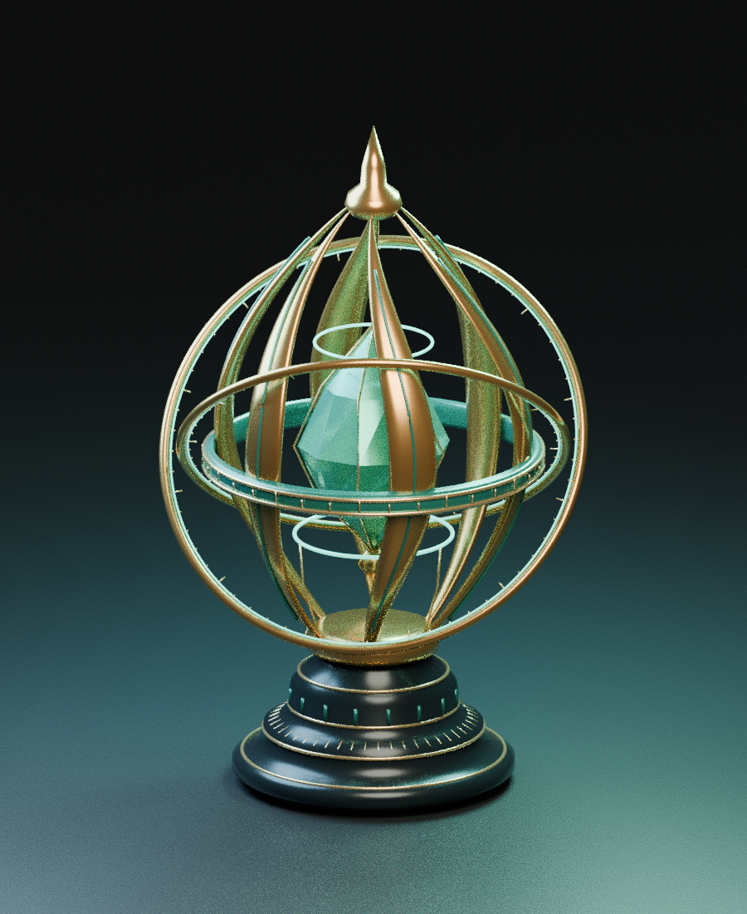
001 / 模型与介绍页
悬浮圣器AETHER
已归档公开已核验
从旋转截面与扫掠肋叶出发，研究环形秩序、金属骨架与晶体之间的关系。
检查、不足与复用边界
已做检查：修复环缝、重合端盖与极点；重复面、退化面、共面重叠候选和非流形边已归零。
仍未验证：前景宽肋遮挡晶核，腰部投影偏密；保留的 427 对接触候选不是“零穿插”证明。
网页 v2 · 已修订，静态局部复查通过
3D空间设计 0 已验收 · 2 原型
SD01以连接操作理解构件；SD02以连续场所观察比较建筑关系。两者都仍是待验原型，不因公开而提升设计验收。目标是整个页面成为可探索的三维空间：布局、导航和内容在空间内，HTML仅按需叠层。原型主体验按整视口连续空间组织，尚待实时与用户方向验收，不等于已满足要求。

SD01 / 3D空间设计原型
连接工坊SPATIAL DESIGN PROTOTYPE
已归档公开已核验0.3.0-prototype空间操作原型修订／待GPU与用户方向验收
在转动庭比较三个灯臂样本，在插接廊逐级提起中间隔板
空间任务：通过转动和插接操作理解连接关系
检查、不足与复用边界
已做检查：检查范围及身份见原型评审；CPU/模拟/无GL备用模式各自限定。
仍未验证：GPU主体验、真实输入/触屏/iPhone未验；19对实体包容未验；不声称全部穿插归零；CPU/模拟生命周期/真实无GL备用模式各自限定，不可互相替代
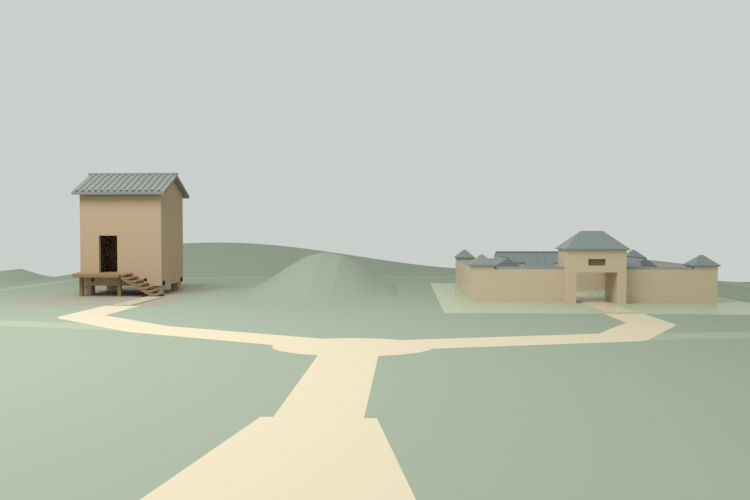
SD02 / 3D空间设计原型
岔径·望场SPATIAL DESIGN PROTOTYPE
已归档公开已核验0.1.0-prototype建筑场所观察原型／待GPU与用户方向验收
从低位入口分岔，在仓前看梯廊、在院门看通隙；主动抬升俯读不同建筑关系
空间任务：有限镜头下观察仓前与院门的建筑场所关系
检查、不足与复用边界
已做检查：检查范围及身份见原型评审；CPU/模拟/无GL备用模式各自限定。
仍未验证：非历史聚落复原；不同地域年代原件的当代比较场；固定低位与有限转向、高位俯读；不是自由步行；GPU主体验、触屏/iPhone、动态闪烁、帧率与用户理解未验；013B真实迁移仅两个离散组合；不保证任意几何/连续全域
下方历史实验继续保留，不计为满足新要求的成品；公开状态和设计验收分开记录。
历史空间网页实验 04
4项旧版实验已公开；按新的整页三维空间要求待重做
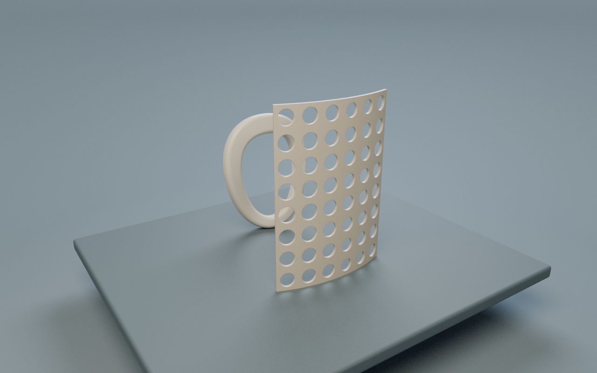
F04 / 历史空间网页实验
孔与隙APERTURE ATLAS
已归档公开已核验按新设计要求待重做
固定两件物，让遮挡、穿孔与绕行成为同一空间的阅读路径。有限几何替换由独立复用页说明，完整原生变体保存在源包。
检查、不足与复用边界
已做检查：CPU几何、跨引擎相机、原生导航与无GL降级已完成限定检查；Latitude与Horizon实际几何替换复验。
仍未验证：GPU、动态闪烁、iPhone仍未验；同场景CPU渲染不等于实时验收，有限替换不证明任意几何可复用。
限定检查；未覆盖GPU与真机
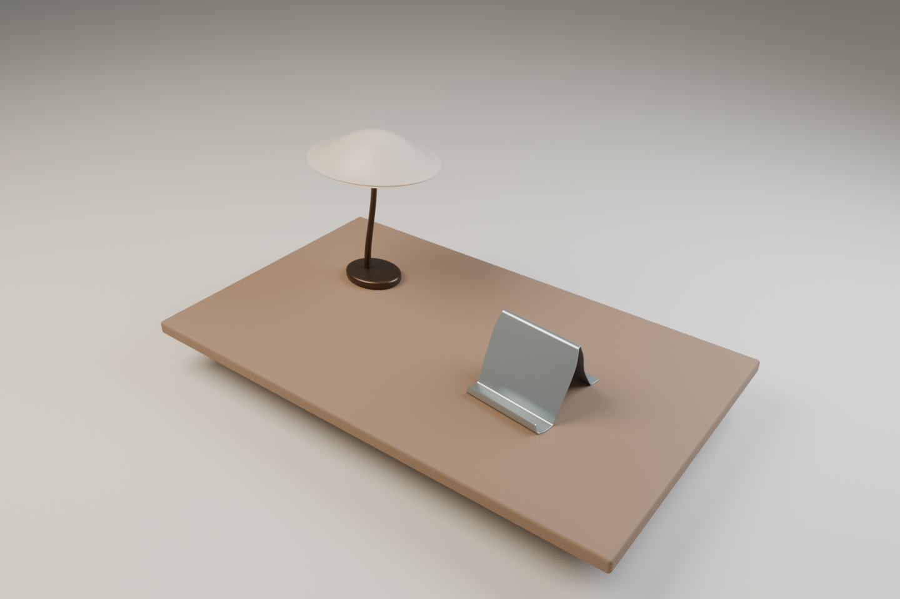
F03 / 历史空间网页实验
案上秩序ORDER ON THE DESK
已归档公开已核验按新设计要求待重做
一盏灯、一片折面与留白，让同一张桌面成为阅读目录。三个章节共享真实场景，而不只是把两件作品拼成海报。
检查、不足与复用边界
已做检查：CPU 几何、跨引擎相机对应、原生导航与后退、GL 失败降级已完成限定检查，并经独立复核。
仍未验证：真实 GPU 图像、动态深度闪烁、iPhone 性能及物理光照均未验证；离线同场景不是实时验收。
限定检查；未覆盖GPU与真机
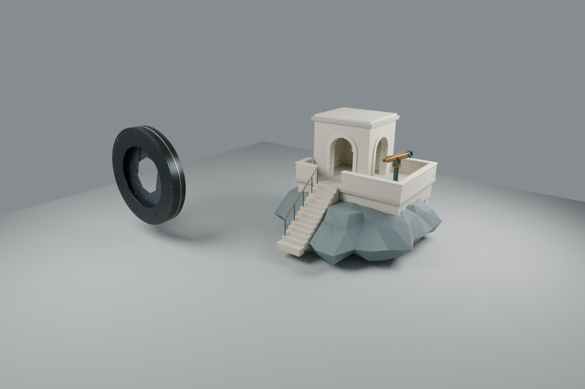
F02 / 历史空间网页实验
观测的尺度SCALES OF SEEING
已归档公开已核验按新设计要求待重做
从机械近景走向海岸建筑。抵达、结构、观测三个位置，组织尺度、支点与空间路径三个问题。
检查、不足与复用边界
已做检查：导航、后退与键盘；320 / 390 / 768 窄宽和无脚本；图像 404 保图恢复、配置 404 文字降级已作限定浏览器检查。
仍未验证：真实 WebGL 场景、实体手机、200% 缩放和完整辅助技术仍未验；临时渲染器清理仅经代码检查。
限定检查；未覆盖GPU与真机
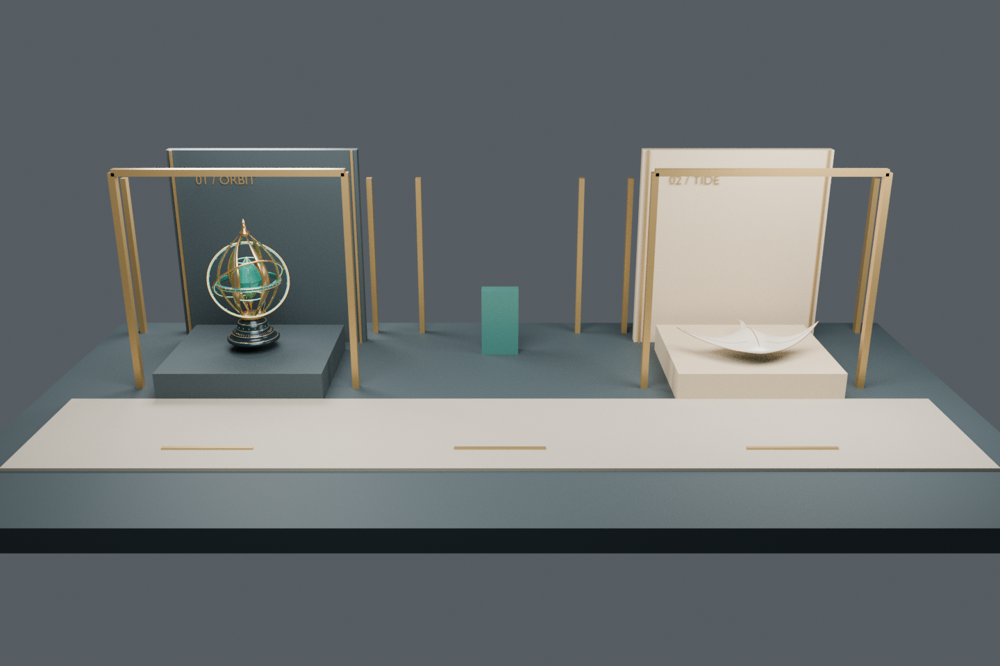
F01 / 历史空间网页实验
轨与翼SPATIAL INDEX
已归档公开已核验按新设计要求待重做
让空间承担导航，而不只是容纳模型。序厅、星轨与潮翼三章，始终保留等价的文字阅读路径。
检查、不足与复用边界
已做检查：完成导航、URL 状态与后退同步，以及 320 / 390 / 768 宽、无 JavaScript 的局部浏览器检查。
仍未验证：真实 WebGL 相机运动、物理手机、200% 缩放与完整辅助技术验收仍待完成。
限定检查；未覆盖GPU与真机
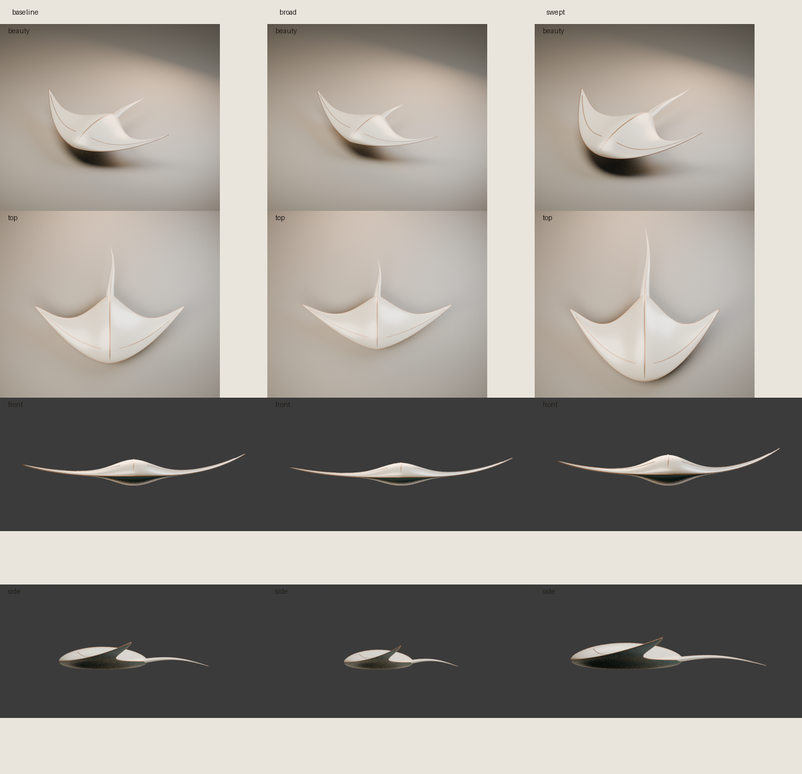
ceramic-wing-v1 / 几何配方
陶瓷翼 · 可复用生成配方REUSABLE RECIPE
已归档公开已核验
同一生成器，三种几何；保留输入条件、构造不变量与失败边界。
检查、不足与复用边界
已做检查：有限预设和重复生成检查，不是连续参数域证明。
仍未验证：实体制造及任意几何迁移未验。
条件 → 证据 → 复现
quality-workflow-v2 / 工作方法
造物手记工作法 v2QUALITY WORKFLOW
已归档公开已核验
16条条件化准则与30项证据，逐项记录几何、导出、网页和发布边界。
检查、不足与复用边界
已做检查：工作法与执行清单，不是通用检查器。
仍未验证：新形体仍需针对性测试；不计作新作品或配方。
THE INDEX IS PART OF THE WORK
每一版，都把目录一起做好。
每版产出同步清单、公开状态与链接；复查最新入口、分类、窄屏、键盘及无脚本，再部署核验。